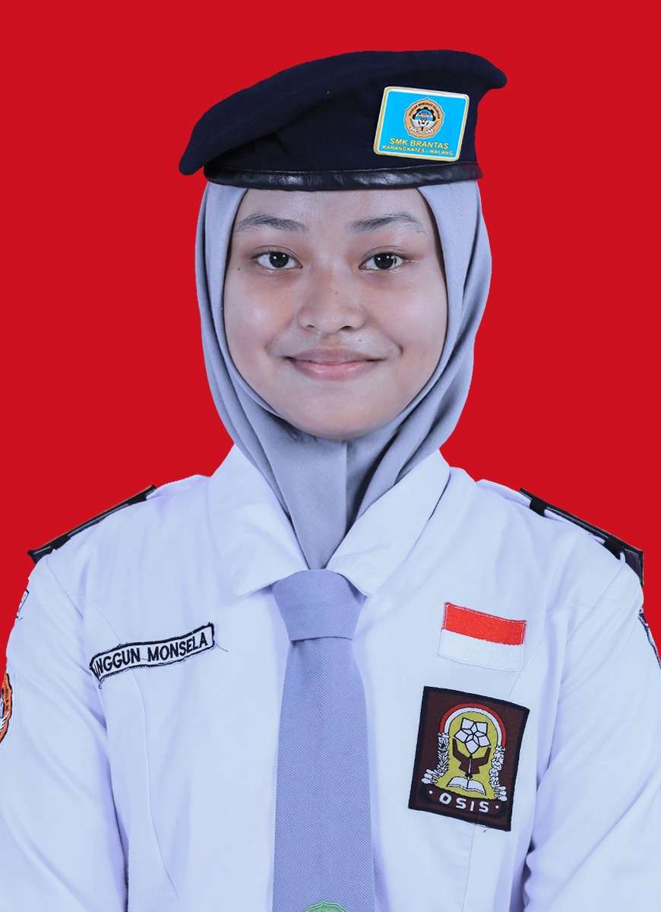
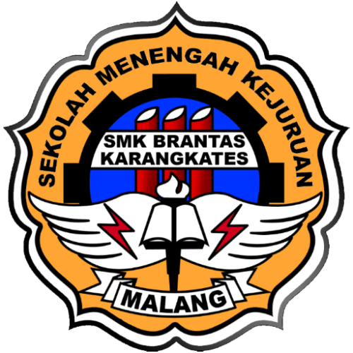
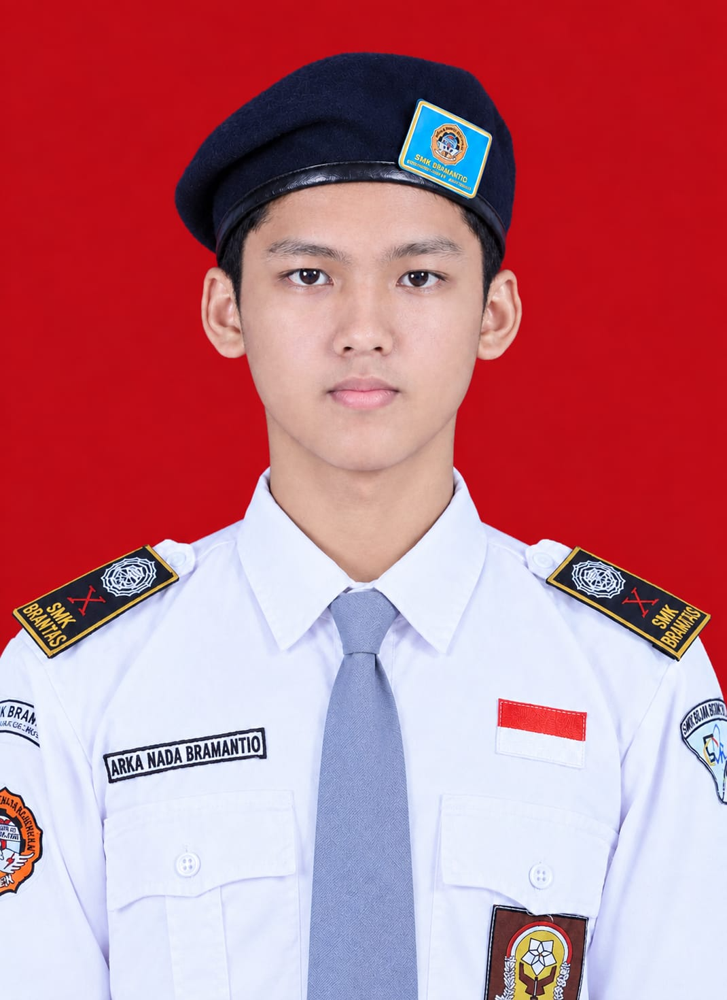
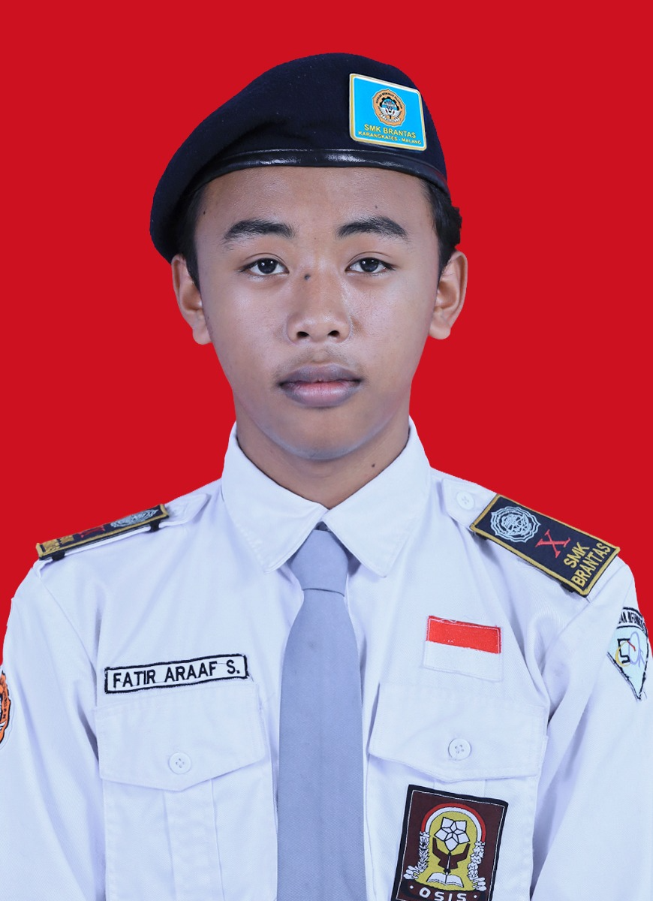
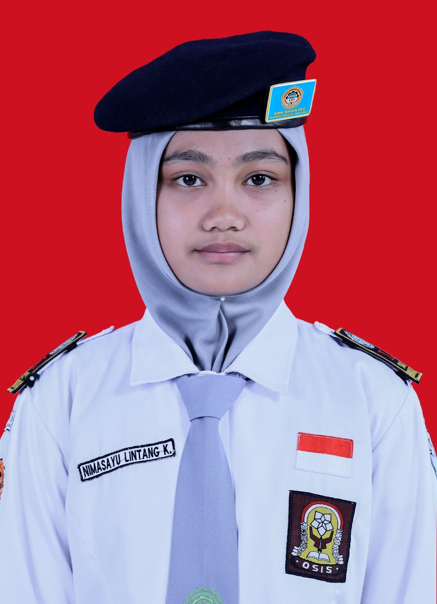

Anggun Monsela
Siswa XI RPL 1 · 07
software testing

XI RPL 1 · Student Showcase
Kenali karya dan perjalanan kreatif kami di bidang Rekayasa Perangkat Lunak
Website Profil Siswa

Siswa XI RPL 1 · 07
software testing

Siswa XI RPL 1 · 08
Game Development

Siswa XI RPL 1 · 18
Web development

Siswa XI RPL 1 · 23
Python Developer

Siswa XI RPL 1 · 29
System Analyst